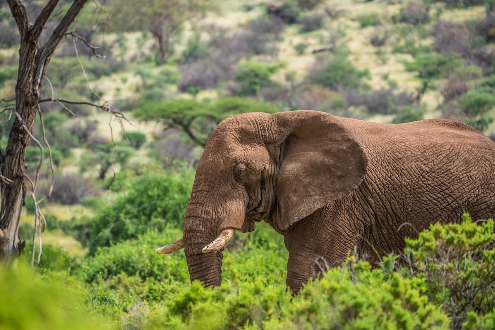

Two countries, opposite coasts, both calling for international aid in
mitigating the never-ending clashes between wild elephants and rural communities.
On 4 May 2021, the Elephant Protection Initiative Foundation hosted a
special event where Hon. Najib Balala, Cabinet Secretary and Minister
of Tourism of Wildlife in Kenya, and Prof. Lee White, Minister of
Forests, Oceans, Environment and Climate Change in Gabon, spoke on
how human-elephant conflict affected their respective countries.

[Elephants in Samburu National Reserve, Samburur, Kenya. Taken 26 May 2019 | Photos by Beks / Unsplash
Human-elephant conflict is a long-established issue in rural farming
communities. Due to rapid population growth, urbanization and habitat
fragmentation, there are increased incidents where elephants are forced
out of protected areas in search of farmland food.
When wild elephants venture into human settlements, there are clashes
with locals—leading to crop raids or in the most severe cases, injury
and death to humans. The flattening of crops often means the destruction
of a subsistence farmer’s livelihood. Thus, affected communities do
not view the conservation of elephants as profitable and will in turn
protect their income by killing these giant trespassers.
Hon. Balala explained at the event, ‘As soon as there is an elephant
death caused by humans the [Kenyan] government is all over it. However,
if a human dies from an elephant, there is little to no concern from
the government. This in turn creates larger resentment of local
communities towards elephants.’
‘One must address the needs of the affected people too.’
Kenya reports 50 to 120 elephants shot every year due to human-wildlife
conflict, and that around 200 people died between 2010 and 2017 due
to elephants. If there is to be a symbiotic coexistence between humans
and elephants, one must address the needs of the affected people too.
The EPI Foundation works with its 21 member states all across the
African continent to conserve elephants and protect the livelihoods
of the communities living alongside them.
Currently, the only widespread course of action after a human-elephant
conflict incident is monetary compensation. However, simply paying an
affected farmer, who has either experienced the injury or loss of a
family member or crop, is treating a symptom rather than addressing
the core issue. Human-elephant conflicts will increase in correlation
with population growth and habitat fragmentation. The establishment of
large protected areas and wildlife corridors is vital.
Monetary compensation will not remove the threat of future attacks.
Often it may prove counterproductive, where it decreases the farmer’s
incentive to defend their crops or results in corruption through false
claims. Additionally, compensation has been shown to be slow to
administer and often there are not sufficient funds to cover the
losses of each farmer—leading to further conflict.
Kenya’s human-elephant conflict should be of international concern
In Kenya, many people do not get compensated at all due to the
insufficient funds the government can allocate to this conflict. To
tackle this, Hon. Balala set up a taskforce in 2019 to find ways to
finance these compensations. However, three years onwards this has
still proven to be difficult.
‘Sometimes, insurance on these issues requires $40 million per year,
which the government does not have. However, they are the only ones
responsible for addressing this issue as there is no one else who is
helping. Even if the human-wildlife conflict occurred in a community
conservancy or on private land, it’s the government who has to pay.
This needs to be an international issue.’
Agriculture is at the core of Kenya’s rural economy; it accounts for
27% of the country's GDP and contributes to a further 27% of other
sectors. More than 70% of rural communities are employed in the
agricultural sector. At the rate of the country’s current population
growth, Kenya’s economy will require the expansion of croplands into
arid lands.
Hon. Balala emphasizes the importance of understanding both the carrying
capacity of elephants in African countries, as well as measuring the
monetary compensation needed for people. Currently, there are around
35,000 elephants in Kenya, a figure which has doubled in the past 30
years, increasing both the pressure on human agriculture and resources
to sustain the elephants. The 12.4% of protected land in Kenya is
highly fragmented, and a large portion of the country’s elephant
population is in the small northern tip of the Masai Mara reserve.
Samburu Women, Kenya. Taken 26 October 2020. | Ken Kahiri / Unsplash
‘Kenyan Elephant populations have doubled in the past 30 years’, Hon. Balala.
A 2021 study by Tiller and colleagues investigated 15 years of elephant
crop-raiding trends in the Trans Mara—where the majority is outside the
Masai Mara nature reserve. The trends found that with a human population
growth of 63% in the area, the agricultural system switched to
pastoralism to meet the growing demand.
In return this resulted in an increased fragmentation of the land the
elephants roam on. In 2000, the unprotected areas of the Trans Mara
contained 200 to 300 elephants, with 263 crop-raiding incidents. In
2015, the team found that despite the elephant population decreasing
to 100 individuals, the incidents increased to 392. It shows how
damage to crops, property, human injury and even loss of life,
undermines support for conservation efforts.
In 2016, the Kenyan Government declared the end of human-elephant
conflict in the Laikipia Province, which is home to 6300 elephants.
This was accomplished by building an electric fence of 163km in
length—protecting two million acres of crop for smallholder farmers.
Perhaps the same strategy can be applied in the Trans Mara and beyond.
Gabon’s forest elephant population is on a rapid decline.
Gabon has lost a third of its elephants in the past 15 years, a number
estimated to be around 20,000 individuals. However, at the special
event Prof. White stated that, ‘despite fewer elephants, the
human-wildlife conflict is getting worse. Elephants are coming closer
to human communities, even appearing in a vicinity of 30 to 40
kilometres of [the capital] Libreville.’
As in Kenya, rural Gabonese are suffering from elephants trampling
their agricultural lands. However, as 86% of the country’s population
lives in urban areas, habitat fragmentation is not the primary concern
for driving the human-elephant conflict. Instead, cross-border poachers
who act in the forest reserves push elephants out, who migrate towards
villages for refuge.
The World Bank has already allocated $9.1 million to Moukalaba Doudou,
Loango, Mayuma and Waka National Parks in Gabon, with the primary aim
being to reduce poaching and wildlife trafficking. Nonetheless, Prof.
White is still called in to manage the opposition towards elephant
conservation on the daily.
‘The Horn of Africa does not come close to generating enough revenue
to conserve these areas and provide compensation to communities there’,
voiced Greta Lori of EPI foundation at the event.
Elephants in Amboseli, Kenya. Taken 20 June 2020. | Neil and Zulma Scott / Unsplash
Human-elephant conflict has been linked to climate change
A study conducted by Bush and colleagues found that trees in Lopé
National Park, Gabon, are reproducing fruit less often. The average
ripening dropped from every one-in-ten trees to one-in-fifty trees
between 1987 to 2018.
Fruit is a main resource in the diets of many African megafauna and
its production is closely linked to climatic cues. Many afrotropical
fruits only flower when the temperatures drop; these have occurred
less frequently due to the temperature increases linked to climate
change. Climate change has increased the average temperature in Lopé
National Park by 0.25 degrees Celsius.
As a result, photograph databases of Gabonese elephants have found
that their external body condition has declined over time. This can
have a significant impact on the reproductive health of female
elephants, implicating future population numbers. The study was also
able to link the decreased ripening of fruit to the increased presence
of elephants in agricultural areas.
Gabon, Kenya and other EPI member states require funds to mitigate this conflict
As monetary compensation alone is not a sustainable solution towards
alleviating the pressures of human-wildlife conflict, alternative
strategies have been proposed. These include on-site acoustic deterrents,
selective culling and elephant relocation. However, relocating
‘problem-individuals’, requires substantial funds for helicopter
transport and specialized training for the team involved.
Another solution is the construction of electric fences around cropland,
which has proven to be successful in the Lakipia Province, Kenya.
However, these cost between $1000 to $10,000 per kilometre and are a
site-specific solution. It is hard to effectively apply fences to
highly fragmented areas. There is also the problem that tusks do not
conduct electricity and the elephant may still be able to cause
substantial damage to the expensive fence.
Smithsonian National Zoo using aviation and aerospace technology to create a first-of-its-kind global animal-tracking system in efforts to mitigate human-elephant conflict. | Smithsonian National Zoo / Flickr
One can also not fence elephants into protected areas without risking
proliferation of their populations—diminishing the resources other
organisms rely on and restricting healthy gene flow between elephant
lineages. Thus, special advisor to EPI, Grant Burden explains, ‘This
option may be useful in the short term, but not very effective down the line.’
Planting crops which are not ‘elephant friendly’ (i.e., unpalatable
chili crops), can be effective as a low-cost, small-scale solution.
Although, a downside is that such crops may not always be as profitable
to the farmer themselves. Some farmers have implemented bio-acoustic
methods, such as beehive fences, to deter elephants. These have the
added benefit of not only offering protection, but also honey and
pollination services. Early detection of approaching elephants via
infrasonic detectors and GPS collars has also been put into practice,
in order to warn farmers of the threat early on.
As Greta Lori concluded the EPI foundation special event:
‘Solutions forward will need to address racial, social and environmental
inequality in the access to natural resources. In such instances, we
cannot just protect biodiversity for biodiversity’s sake—especially
in the issue of human-elephant conflict.’
Featured Image: Larry Li / Unsplash
Bush E., Whytock R., Bahaa-el-din L. et al. (2020) Long-term collapse in fruit availability threatens Central African forest megafauna. Science. Volume 370, Issue 6521, Pages 1219-1222.
Schaffer J., Khadka K., Hoek J. and Naithani K. (2019) Human-Elephant Conflict: A review of current management strategies and future directions. Front. Ecol. Evol. Volume 6, Article 235.
Tiller L., Humle T., Amin R. et al. (2021) Changing seasonal, temporal and spatial crop-raiding trends over 15 years in a human-elephant conflict hotspot. Biological Conservation. Volume 254, 108941.